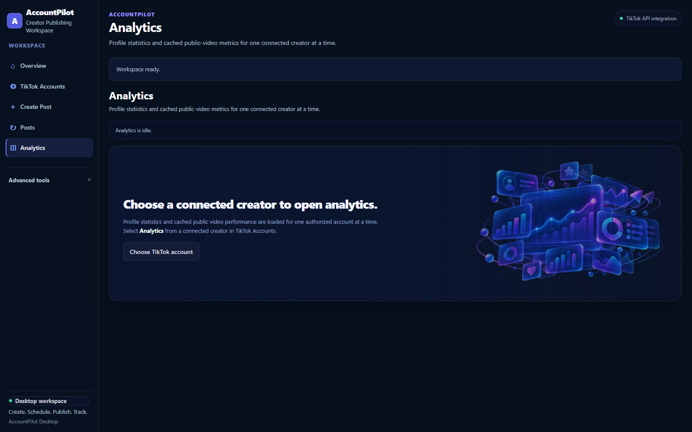

Authorized account context for creator decisions.
AccountPilot uses TikTok data only after the creator authorizes the relevant permissions. Profile, statistics and recent public-video context support analysis and planning before publishing.
Basic creator identity
user.info.basic supports the connected creator identity, including fields made available by the authorized API response.
Profile context
user.info.profile supports authorized creator profile information used inside the connected-account workspace.
Account statistics
user.info.stats supports creator-specific account statistics used for analysis and planning.
Recent public videos
video.list supports recent public-video context for performance review and content planning.
Insights do not publish content.
Analytics and planning can inform creator decisions, but publishing remains a separate creator-controlled flow with destination review, explicit settings and consent.
